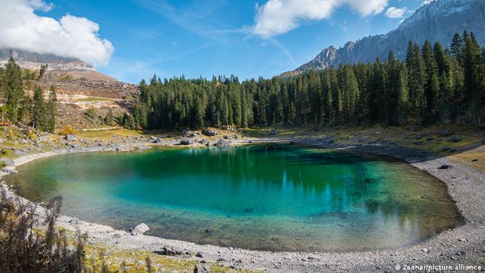

Bosque Profundo

Bosque profundo es el lugar más energético de la isla. Se dice que es el principio de todo, y que moviendo los sedimentos con sus infinitas raices, el fué creando a lo largo de miles de años la totalidad de la isla. En el, conviven especies ancestrales, y todo en su interior tiene vida.
Bosque Opaco
Bosque Opaco se encuentra muy al suroeste de la isla, casi contra el mar, y algunas ramificaciones llegan a tocar los árboles más externos. Además hace de cobijo a un pequeño pueblo llamado "Botín del Oeste"
Claroscuro
Claroscuro es un bosque de árboles sumamente altos y finos con hojas solo en las copas, generando como un débil techo. Esto genera que la luz pase intermitente dando una sensación de luz y oscuridad simultanea.
Lago Landical
Lago Landical se encuentra bastante en el centro de la isla, nutre sus ramas bordeando el Bosque de la Luna y desembocando en dos castillos, el castillo Aro de Fuego, y el castillo Fuerte Roble.